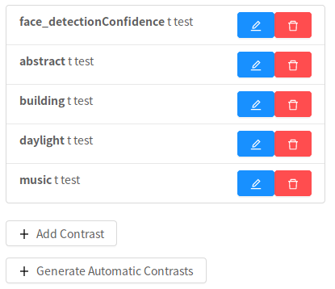

Contrasts
In this tab, you can define contrasts to compute at the first-level after the design-matrix is fit to the fMRI activation time-course.
As there are often no experimental conditions in naturalistic studies, it often makes the most sense to simply propagate the individual estimates for each predictor of interest (e.g. non-confounds).
We can achieve this using "dummy contrasts", in which each Predictor is given a dummy-coded contrast of the same name.
To do this for all non-confounds, simply click Generate Dummy Contrasts.

Note
If you go back to the Predictors tab and edit the predictor list, you may have to re-generate dummy contrasts.
Defining a custom contrast
To define a contrast, click Add Contrast. First, you must give the contrast a name.
Next, select the predictors to include in this contrast. All predictors not selected will be given a weight of 0.
Finally, enter the weights for the selected predictors.

In this example, we are contrasting building and daylight using t contrast.
As in the transformations tab, you can re-order, trash, and edit existing contrasts.